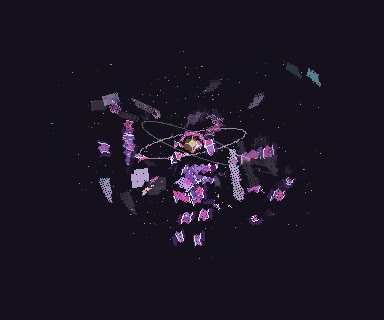

Aru · Shattered body
The missing pieces are still here. Jagged gaps break the legs, arms, torso and head; their matching fragments tumble around the heart.

Broken, but still connected
36 separate body fragments. 19 remain near the body’s shape; 17 removed chunks orbit independently. The heart pulses through the gaps, with dust trails and brief rainbow-wing flashes.
64 frames · 5.12 seconds · 384 × 320 per frame
Download shattered-body pack


Each broken piece, separately
Each fragment has its own 32-frame rotating animation. Labels show where it came from and whether it orbits in the complete loop.